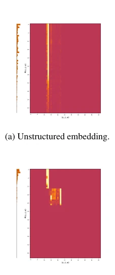
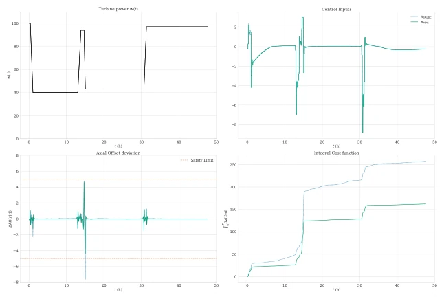

中文
← 返回 ← Back
Structured Representation Learning for Behavior Cloning: How can we learn to safely control a nuclear power plant?
Perceval Beja-Battais, Alain Grosset{ê}te, Nicolas Vayatisabs pdf
论文点评 Review 这篇论文给工业界上了一课：在安全攸关的核反应堆控制里，单纯追求模仿准确率（Behavior Cloning Loss）简直就是掩耳盗铃。作者用事实告诉你，模型在组件级（component-level）表现再好，一旦嵌入系统，只要有一丁点轨迹不满足物理约束，整个系统就“炸”了。虽然他们提出的结构化架构（SRLBC）确实让模型更懂物理、更 interpretable，但最讽刺的是，光靠这个模型 standalone 部署依然有 2-5% 的轨迹会违规，完全不敢直接上线。不过，作者很聪明地没硬刚，而是把它当 NMPC 的“暖启动”（warmstart），既保住了安全底线，又省了 15% 的计算时间。这招“借鸡生蛋”比那些吹嘘端到端完美替代传统控制器的论文要务实得多，但也暴露了纯数据驱动方法在极端工况下的硬伤：没有优化器的兜底，AI 就是个不靠谱的实习生。
—
研究动机 Motivation 在电力网格管理和核电厂负荷跟踪（load-following）场景下，传统的非线性模型预测控制（NMPC）虽然能保证严格的安全约束，但在线计算负担太重，难以在资源受限的工业管道中实时部署 [Qin and Badgwell, 2003; Rao, 2009]。机器学习（ML）被寄予厚望，旨在通过行为克隆（Behavior Cloning, BC）或强化学习来替代在线优化，从而降低计算成本 [Hossain and Kumar, 2023; Vaupel et al., 2020]。然而，现有研究往往过度依赖聚合准确率（aggregate accuracy）作为评价指标，误以为模仿损失低就等同于系统安全。本文指出，这种假设在安全攸关的系统中是致命的：组件级的精度无法保证嵌入系统后的可行性（feasibility）。对于压水堆（PWR）这种具有多时间尺度、强非线性且约束严苛的系统，现有的 ML 控制器往往因为忽略了物理结构的解耦，导致在长时程 rollout 中出现不可行的轨迹，甚至违反安全约束 [Hertneck et al., 2018]。因此，亟需一种既能保留物理可解释性，又能确保严格满足安全约束的控制器架构。
—
方法 Method 本文提出了一种结构化表示学习用于行为克隆（SRLBC）的框架，核心思想是将输入变量按物理时间尺度分解，分别编码到独立的潜在空间，而非混合在一起。整体 Pipeline 分为编码、融合与决策三个阶段：首先，系统状态被分为慢状态变量 x（如硼浓度、碘氙浓度）、快状态变量 z（如功率、温度）和外部输入 w（如功率需求）。接着，三个独立的编码器（ϕx, ϕz, ϕw）分别将这些变量映射到各自的潜在空间，每个编码器都是基于 MLP 的架构。这种设计强制模型在特征提取阶段就遵循物理系统的奇异摄动结构（singularly perturbed structure），即慢变量和快变量在底层解耦。随后，将这三个独立的潜在表示拼接（product latent space），输入到控制器 πBC 中。控制器通过最小化与专家 NMPC 策略的均方误差进行训练。为了进一步提升性能，训练过程中还引入了去相关正则化项，强制不同时间尺度的潜在变量保持统计独立性。最后，该模型不仅可 standalone 部署，更关键的是作为 NMPC 优化器的初始猜测（warmstart），利用其快速预测能力引导优化器收敛，从而在保留 NMPC 安全性的前提下加速计算。
—

Figure 2: Sensitivity analysis. 实验 Experiments 实验基于一个高保真的压水堆（PWR）负荷跟踪仿真器，构建了包含约 80,000 个训练点和 1,000 个测试 rollout（每个 48 小时）的数据集。基线对比了不同维度的共享嵌入（Shared Embedding）BC 模型与本文提出的 SRLBC 模型。评测指标包括成本比率（Cost Ratio）、与最优控制的相对差距、轨迹可行性（Feasibility）以及计算时间。结果显示，SRLBC 在 standalone 模式下，可行性达到 97.8%，优于共享嵌入基线的 94.1%，且成本更接近最优。更有趣的是，当作为 NMPC 的 warmstart 时，SRLBC 不仅恢复了 100% 的可行性，还将计算时间减少了约 15%（相对于纯 NMPC），特别是在应对突发工况变化时加速效果显著。消融实验表明，引入去相关正则化（Decorrelation）能进一步提升性能。敏感性分析（图 2）证实，结构化编码使得模型对关键物理变量（如硼浓度）的依赖更加清晰，符合核物理常识，而共享嵌入则显得模糊且难以解释。
—

Figure 3: Representative example of a failure using SRLBC standalone controller (dotted, blue). NMPC expert is plotted in solid green. At t ≈15 hours, a last-minute change occurs: the power that was increasing is rapidly asked to decrease, which creates a challenging situation. SRLBC fails to keep the axial offset above −5% (bottom-left graph).